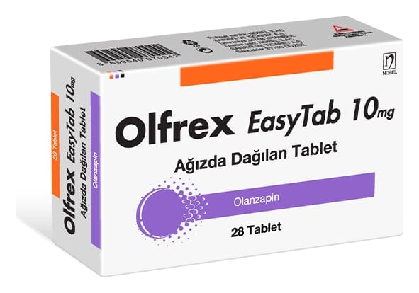

Olfrex Easytab 10 mg Ağızda Dağılan Tablet, 28 Adet

Ne için kullanılır
KT · Bölüm 1OLFREX EASYTAB 28 tabletlik blister strip ambalajlarda kullanıma sunulmuş olup bir kutusunda her biri 7 ağızda dağılan tablet ihtiva eden 4 adet blister strip mevcuttur. OLFREX EASYTAB ağızda dağılan tabletler yuvarlak ve sarı renktedir.
OLFREX EASYTAB, antipsikotikler adı verilen bir ilaç grubuna aittir ve aşağıdaki durumların tedavisinde kullanılır.
• Gerçekte var olmayan şeyleri duymak, görmek veya hissetmek, yanlış inanışlar, anormal şüphecilik, içine kapanmak gibi belirtilerin eşlik ettiği bir hastalık olan şizofreninin tedavisinde kullanılır. Ayrıca bu hastalığı yaşayan hastalar kendilerini depresif, endişeli veya gergin hissedebilirler.
• Heyecan ve coşku hali durumları görülen, orta ve şiddetli manik dönemlerin tedavisi,
OLFREX EASYTAB’ın manik dönemde (heyecan veya coşku belirtileri olan bir durum) olanzapin tedavisine cevap veren bipolar bozukluğu (ruhsal durumdaki zıt yönlü değişiklikler) olan hastalarda, bu belirtilerin tekrar oluşmasını önlediği gösterilmiştir.
OLFREX EASYTAB, benzer durumların tedavisi için hekimin uygun gördüğü durumlarda 13-17 yaş arasındaki ergen hastalarda da kullanılabilir.